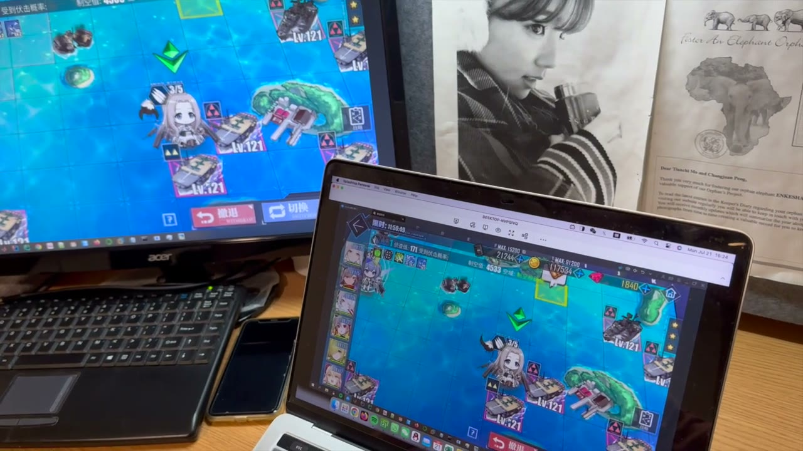
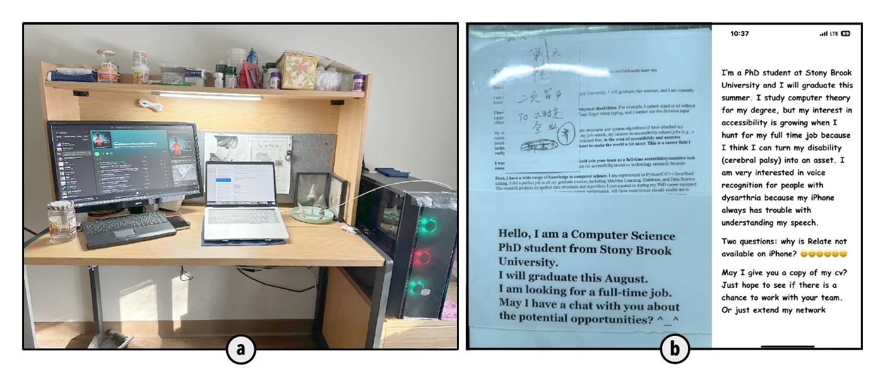
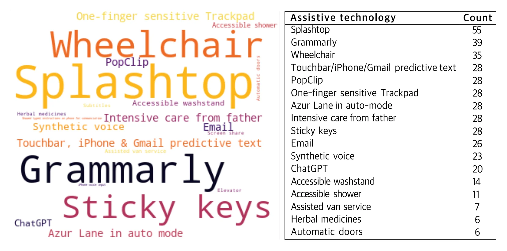
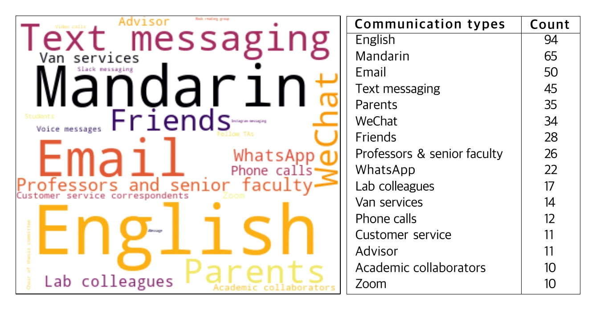
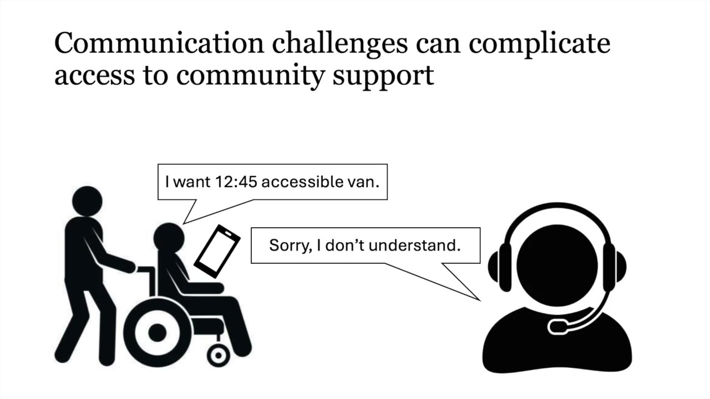
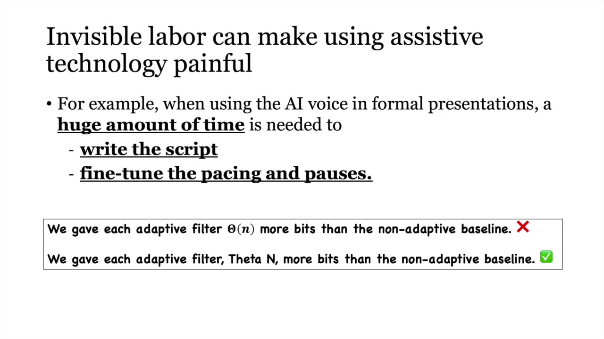

Life as a PhD Student with Cerebral Palsy

Communication is never just a single device or voice. For Tianchi Mo — who goes by Maverick — it moves between spoken English and Mandarin, email, text messages, synthetic speech, prepared notes and the people around him. Each method carries its own physical effort, social expectations and trade-offs.
Maverick is a computer scientist with cerebral palsy who completed his PhD at Stony Brook University. Together, we created a structured, questionnaire-based diary to document the final stages of his doctoral journey from his own perspective: everyday life, assistive technology, accessibility and communication.


Across 28 daily entries, completed from 3 February to 2 March 2025, Maverick reflected on who he communicated with, which language and technology he used, how much he communicated, and how positive those interactions felt. He also recorded the technologies and care that made each day possible — from predictive text and Sticky Keys to remote desktop software and support from his father.

All three authors independently coded the open-ended diary entries before developing three themes from 636 discussion instances. I also analysed the daily ratings and communication frequencies. The mixed-methods approach mattered: Maverick's consistently positive numerical ratings sat alongside detailed accounts of strain, breakdown and improvisation that a score alone could not show.

The hidden labour of communication emerged throughout the diary. Phone calls could break down when listeners were unfamiliar with Maverick's dysarthria; saying “twelve” to the accessible-van dispatcher meant repeating himself dozens of times before coaching his non-English-speaking father to make the request. In noisy settings, Maverick often prepared text on his phone and showed it to the person he wanted to speak with.
Asynchronous tools such as email, text messaging, WeChat and WhatsApp helped Maverick maintain an international network and respond at his own pace. Yet typing itself could be physically exhausting. Fast exchanges could leave replies out of sequence, while privacy sometimes depended on waiting to listen to a voice note or converting it into text.
For formal presentations, Maverick uses a synthetic voice. Preparing a 40-minute talk can take up to three weeks: writing a 5,900-word script, dividing it into roughly 50 audio segments, and repeatedly adjusting pronunciation, pacing and pauses. Technical notation has to be rewritten for speech — “Θ(n)” becomes “theta-N” — before it can be heard as intended.

The study identified three connected themes: resilience through technical proficiency, as Maverick creatively adapted mainstream systems; communication challenges complicating community support; and fragile interdependencies across care and technology. A discontinued Touch Bar, a messaging bug or a caregiver's health could each materially reshape his ability to work and communicate.
Maverick's diary shows why accessibility research needs first-person, participatory methods. Mainstream technologies can become essential accessibility tools, while small design flaws can create substantial extra physical effort for people with motor impairments. Designing for cerebral palsy means lowering input exertion, recognising the time and financial cost of being heard, and valuing the inventive communication systems people already build around themselves.
Presented at ASSETS 2025 in Denver, Colorado, USA.